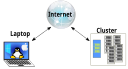

Connecting to a remote HPC system
Last updated on 2026-04-14 | Edit this page
Overview
Questions
- How do I log in to a remote HPC system?
Objectives
- Configure secure access to a remote HPC system.
- Connect to a remote HPC system.
Secure Connections
The first step in using a cluster is to establish a connection from our laptop to the cluster. When we are sitting at a computer (or standing, or holding it in our hands or on our wrists), we have come to expect a visual display with icons, widgets, and perhaps some windows or applications: a graphical user interface, or GUI. Since computer clusters are remote resources that we connect to over slow or intermittent interfaces (WiFi and VPNs especially), it is more practical to use a command-line interface, or CLI, to send commands as plain-text. If a command returns output, it is printed as plain text as well. The commands we run today will not open a window to show graphical results.
If you have ever opened the Windows Command Prompt or macOS Terminal, you have seen a CLI. If you have already taken The Carpentries’ courses on the UNIX Shell or Version Control, you have used the CLI on your local machine extensively. The only leap to be made here is to open a CLI on a remote machine, while taking some precautions so that other folks on the network can’t see (or change) the commands you’re running or the results the remote machine sends back. We will use the Secure SHell protocol (or SSH) to open an encrypted network connection between two machines, allowing you to send & receive text and data without having to worry about prying eyes.

SSH clients are usually command-line tools, where you provide the
remote machine address as the only required argument. If your username
on the remote system differs from what you use locally, you must provide
that as well. If your SSH client has a graphical front-end, such as
PuTTY or MobaXterm, you will set these arguments before clicking
“connect.” From the terminal, you’ll write something like
ssh userName@hostname, where the argument is just like an
email address: the “@” symbol is used to separate the personal ID from
the address of the remote machine.
When logging in to a laptop, tablet, or other personal device, a
username, password, or pattern are normally required to prevent
unauthorized access. In these situations, the likelihood of somebody
else intercepting your password is low, since logging your keystrokes
requires a malicious exploit or physical access. For systems like
login1 running an SSH server, anybody on the network can
log in, or try to. Since usernames are often public or easy to guess,
your password is often the weakest link in the security chain. Many
clusters therefore forbid password-based login, requiring instead that
you generate and configure a public-private key pair with a much
stronger password. Even if your cluster does not require it, the next
section will guide you through the use of SSH keys and an SSH agent to
both strengthen your security and make it more convenient to
log in to remote systems.
Better Security With SSH Keys
The Lesson Setup provides instructions for installing a shell application with SSH. If you have not done so already, please open that shell application with a Unix-like command line interface to your system.
SSH keys are an alternative method for authentication to obtain access to remote computing systems. They can also be used for authentication when transferring files or for accessing remote version control systems (such as GitHub). In this section you will create a pair of SSH keys:
- a private key which you keep on your own computer, and
- a public key which can be placed on any remote system you will access.
Private keys are your secure digital passport
A private key that is visible to anyone but you should be considered compromised, and must be destroyed. This includes having improper permissions on the directory it (or a copy) is stored in, traversing any network that is not secure (encrypted), attachment on unencrypted email, and even displaying the key on your terminal window.
Protect this key as if it unlocks your front door. In many ways, it does.
Regardless of the software or operating system you use, please choose a strong password or passphrase to act as another layer of protection for your private SSH key.
Considerations for SSH Key Passwords
When prompted, enter a strong password that you will remember. There are two common approaches to this:
- Create a memorable passphrase with some punctuation and number-for-letter substitutions, 32 characters or longer. Street addresses work well; just be careful of social engineering or public records attacks.
- Use a password manager and its built-in password generator with all character classes, 25 characters or longer. KeePass and BitWarden are two good options.
- Nothing is less secure than a private key with no password. If you skipped password entry by accident, go back and generate a new key pair with a strong password.
SSH Keys on Linux, Mac, MobaXterm, and Windows Subsystem for Linux
Once you have opened a terminal, check for existing SSH keys and filenames since existing SSH keys are overwritten.
If ~/.ssh/id_ed25519 already exists, you will need to
specify a different name for the new key-pair.
Generate a new public-private key pair using the following command,
which will produce a stronger key than the ssh-keygen
default by invoking these flags:
-
-a(default is 16): number of rounds of passphrase derivation; increase to slow down brute force attacks. -
-t(default is rsa): specify the “type” or cryptographic algorithm.ed25519specifies EdDSA with a 256-bit key; it is faster than RSA with a comparable strength. -
-f(default is /home/user/.ssh/id_algorithm): filename to store your private key. The public key filename will be identical, with a.pubextension added.
When prompted, enter a strong password with the above considerations in mind. Note that the terminal will not appear to change while you type the password: this is deliberate, for your security. You will be prompted to type it again, so don’t worry too much about typos.
Take a look in ~/.ssh (use ls ~/.ssh). You
should see two new files:
- your private key (
~/.ssh/id_ed25519): do not share with anyone! - the shareable public key (
~/.ssh/id_ed25519.pub): if a system administrator asks for a key, this is the one to send. It is also safe to upload to websites such as GitHub: it is meant to be seen.
Use RSA for Older Systems
If key generation failed because ed25519 is not available, try using the older (but still strong and trustworthy) RSA cryptosystem. Again, first check for an existing key:
If ~/.ssh/id_rsa already exists, you will need to
specify choose a different name for the new key-pair. Generate it as
above, with the following extra flags:
-
-bsets the number of bits in the key. The default is 2048. EdDSA uses a fixed key length, so this flag would have no effect. -
-o(no default): use the OpenSSH key format, rather than PEM.
When prompted, enter a strong password with the above considerations in mind.
Take a look in ~/.ssh (use ls ~/.ssh). You
should see two new files:
- your private key (
~/.ssh/id_rsa): do not share with anyone! - the shareable public key (
~/.ssh/id_rsa.pub): if a system administrator asks for a key, this is the one to send. It is also safe to upload to websites such as GitHub: it is meant to be seen.
SSH Keys on PuTTY
If you are using PuTTY on Windows, download and use
puttygen to generate the key pair. See the PuTTY
documentation for details.
- Select
EdDSAas the key type. - Select
255as the key size or strength. - Click on the “Generate” button.
- You do not need to enter a comment.
- When prompted, enter a strong password with the above considerations in mind.
- Save the keys in a folder no other users of the system can read.
Take a look in the folder you specified. You should see two new files:
- your private key (
id_ed25519): do not share with anyone! - the shareable public key (
id_ed25519.pub): if a system administrator asks for a key, this is the one to send. It is also safe to upload to websites such as GitHub: it is meant to be seen.
SSH Agent for Easier Key Handling
An SSH key is only as strong as the password used to unlock it, but on the other hand, typing out a complex password every time you connect to a machine is tedious and gets old very fast. This is where the SSH Agent comes in.
Using an SSH Agent, you can type your password for the private key once, then have the Agent remember it for some number of hours or until you log off. Unless some nefarious actor has physical access to your machine, this keeps the password safe, and removes the tedium of entering the password multiple times.
Just remember your password, because once it expires in the Agent, you have to type it in again.
SSH Agents on Linux, macOS, and Windows
Open your terminal application and check if an agent is running:
-
If you get an error like this one,
ERROR
Error connecting to agent: No such file or directory… then you need to launch the agent as follows:
CalloutWhat’s in a
$(...)?The syntax of this SSH Agent command is unusual, based on what we’ve seen in the UNIX Shell lesson. This is because the
ssh-agentcommand creates opens a connection that only you have access to, and prints a series of shell commands that can be used to reach it – but does not execute them!OUTPUT
SSH_AUTH_SOCK=/tmp/ssh-Zvvga2Y8kQZN/agent.131521; export SSH_AUTH_SOCK; SSH_AGENT_PID=131522; export SSH_AGENT_PID; echo Agent pid 131522;The
evalcommand interprets this text output as commands and allows you to access the SSH Agent connection you just created.You could run each line of the
ssh-agentoutput yourself, and achieve the same result. Usingevaljust makes this easier. Otherwise, your agent is already running: don’t mess with it.
Add your key to the agent, with session expiration after 8 hours:
OUTPUT
Enter passphrase for .ssh/id_ed25519:
Identity added: .ssh/id_ed25519
Lifetime set to 86400 secondsFor the duration (8 hours), whenever you use that key, the SSH Agent will provide the key on your behalf without you having to type a single keystroke.
SSH Agent on PuTTY
If you are using PuTTY on Windows, download and use
pageant as the SSH agent. See the PuTTY
documentation.
Transfer Your Public Key
Visit https://mokey.cluster.hpc-carpentry.org
to upload your SSH public key. (Remember, it’s the one ending in
.pub!)
Log In to the Cluster
Go ahead and open your terminal or graphical SSH client, then log in
to the cluster. Replace yourUsername with your username or
the one supplied by the instructors.
You may be asked for your password. Watch out: the characters you
type after the password prompt are not displayed on the screen. Normal
output will resume once you press Enter.
You may have noticed that the prompt changed when you logged into the
remote system using the terminal (if you logged in using PuTTY this will
not apply because it does not offer a local terminal). This change is
important because it can help you distinguish on which system the
commands you type will be run when you pass them into the terminal. This
change is also a small complication that we will need to navigate
throughout the workshop. Exactly what is displayed as the prompt (which
conventionally ends in $) in the terminal when it is
connected to the local system and the remote system will typically be
different for every user. We still need to indicate which system we are
entering commands on though so we will adopt the following
convention:
-
[you@laptop:~]$when the command is to be entered on a terminal connected to your local computer -
[yourUsername@login1 ~]$when the command is to be entered on a terminal connected to the remote system -
$when it really doesn’t matter which system the terminal is connected to.
Looking Around Your Remote Home
Very often, many users are tempted to think of a high-performance
computing installation as one giant, magical machine. Sometimes, people
will assume that the computer they’ve logged onto is the entire
computing cluster. So what’s really happening? What computer have we
logged on to? The name of the current computer we are logged onto can be
checked with the hostname command. (You may also notice
that the current hostname is also part of our prompt!)
OUTPUT
login1So, we’re definitely on the remote machine. Next, let’s find out
where we are by running pwd to print the
working directory.
OUTPUT
/home/yourUsernameGreat, we know where we are! Let’s see what’s in our current directory:
OUTPUT
id_ed25519.pubThe system administrators may have configured your home directory with some helpful files, folders, and links (shortcuts) to space reserved for you on other filesystems. If they did not, your home directory may appear empty. To double-check, include hidden files in your directory listing:
OUTPUT
. .bashrc id_ed25519.pub
.. .sshIn the first column, . is a reference to the current
directory and .. a reference to its parent
(/home). You may or may not see the other files, or files
like them: .bashrc is a shell configuration file, which you
can edit with your preferences; and .ssh is a directory
storing SSH keys and a record of authorized connections.
Install Your SSH Key
There May Be a Better Way
Policies and practices for handling SSH keys vary between HPC clusters: follow any guidance provided by the cluster administrators or documentation. In particular, if there is an online portal for managing SSH keys, use that instead of the directions outlined here.
If you transferred your SSH public key with scp, you
should see id_ed25519.pub in your home directory. To
“install” this key, it must be listed in a file named
authorized_keys under the .ssh folder.
If the .ssh folder was not listed above, then it does
not yet exist: create it.
Now, use cat to print your public key, but redirect the
output, appending it to the authorized_keys file:
That’s all! Disconnect, then try to log back into the remote: if your key and agent have been configured correctly, you should not be prompted for the password for your SSH key.
- An HPC system is a set of networked machines.
- HPC systems typically provide login nodes and a set of worker nodes.
- The resources found on independent (worker) nodes can vary in volume and type (amount of RAM, processor architecture, availability of network mounted filesystems, etc.).
- Files saved on one node are available on all nodes.